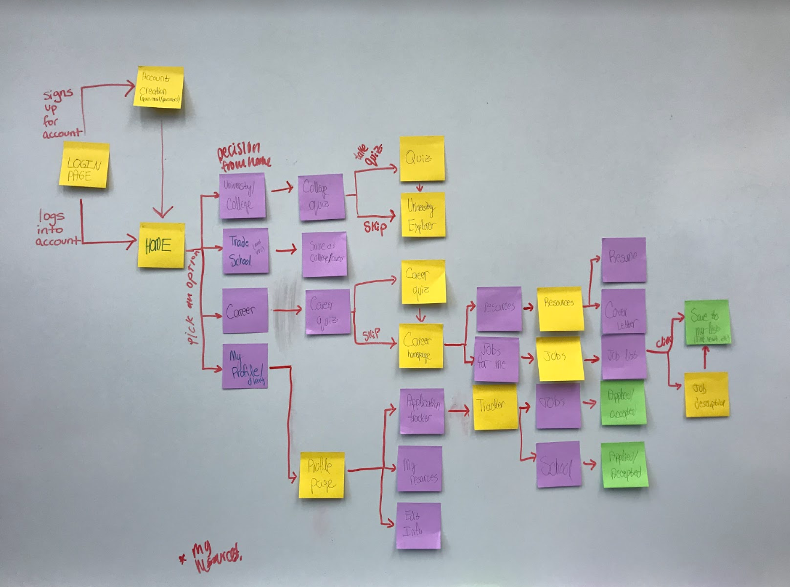

ABIGAIL CHESTER
Pathways
Your tool for life exploration.
High school seniors are often stressed about what to do after graduating. Pathways is a mobile application that helps students discover all of their options and organize them all in one place.
DESIGN PROCESS
1. Brainstorm and Design
Name: Pathways
Problem Statement: Deciding what to do and where to go after high school can be stressful and overwhelming. This application helps graduating students to explore their options and organize their potential paths.
Audience: At first, we wanted to cater our application to foster children aging out of the program since they tend to get less guidance than the average teenager. However, due to time limitations, we found this audience to be very niche and decided to expand our scope to all teens graduating from high school.
Personas:
Primary Persona
Secondary Persona
2. Envision and Prototype
Once we had a good understanding of who our users were and what they needed from our product, we organized our initial thoughts with a user flow diagram and began wireframing.
User Flow Diagram
Wireframes
Paper Prototype
After completing usability tests with our paper prototype, we began to design a high fidelity prototype.
Digital Prototype
Full Digital Prototype3. Takeaways and Next Steps
I learned a lot from this project. I have a better understanding of how to prioritize the users’ needs when designing and how to put those requirements together in one cohesive design. I also familiarized myself with Figma, the tool we used to prototype our product.
Since this project was done throughout a semester, there were time constraints that limited all we could do with this application. Because of this time issue, we only dove deep into prototyping the university side of this application. If we were to continue, we would create similar pages for job exploration. At the beginning of the process, we also discussed including a social aspect to this application which could consider adding. This aspect would connect students in similar scenarios, allow for tips to be shared, and potential for a roommate search option.